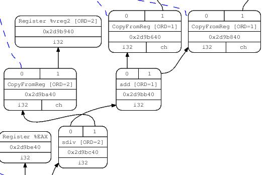

LLVM is a complex piece of software. There are several paths one may take on the quest of understanding how it works, none of which is simple. I recently had to dig in some areas of LLVM I was not previously familiar with, and this article is one of the outcomes of this quest.
What I aim to do here is follow the various incarnations an "instruction" takes when it goes through LLVM's multiple compilation stages, starting from a syntactic construct in the source language and until being encoded as binary machine code in an output object file.
This article in itself will not teach one how LLVM works. It assumes some existing familiarity with LLVM's design and code base, and leaves a lot of "obvious" details out. Note that unless otherwise stated, the information here is relevant to LLVM 3.2. LLVM and Clang are fast-moving projects, and future changes may render parts of this article incorrect. If you notice any discrepancies, please let me know and I'll do my best to fix them.
Input code
I want to start this exploration process at the beginning - C source. Here's the simple function we're going to work with:
int foo(int aa, int bb, int cc) {
int sum = aa + bb;
return sum / cc;
}
The focus of this article is going to be on the division operation.
Clang
Clang serves as the front-end for LLVM, responsible for converting C, C++ and ObjC source into LLVM IR. Clang's main complexity comes from the ability to correctly parse and semantically analyze C++; the flow for a simple C-level operation is actually quite straightforward.
Clang's parser builds an Abstract Syntax Tree (AST) out of the input. The AST is the main "currency" in which various parts of Clang deal. For our division operation, a BinaryOperator node is created in the AST, carrying the BO_div "operator kind" [1]. Clang's code generator then goes on to emit a sdiv LLVM IR instruction from the node, since this is a division of signed integral types.
LLVM IR
Here is the LLVM IR created for the function [2]:
define i32 @foo(i32 %aa, i32 %bb, i32 %cc) nounwind {
entry:
%add = add nsw i32 %aa, %bb
%div = sdiv i32 %add, %cc
ret i32 %div
}
In LLVM IR, sdiv is a BinaryOperator, which is a subclass of Instruction with the opcode SDiv [3]. Like any other instruction, it can be processed by the LLVM analysis and transformation passes. For a specific example targeted at SDiv, take a look at SimplifySDivInst. Since all through the LLVM "middle-end" layer the instruction remains in its IR form, I won't spend much time talking about it. To witness its next incarnation, we'll have to look at the LLVM code generator.
The code generator is one of the most complex parts of LLVM. Its task is to "lower" the relatively high-level, target-independent LLVM IR into low-level, target-dependent "machine instructions" (MachineInstr). On its way to a MachineInstr, an LLVM IR instruction passes through a "selection DAG node" incarnation, which is what I'm going to discuss next.
SelectionDAG node
Selection DAG [4] nodes are created by the SelectionDAGBuilder class acting "at the service of" SelectionDAGISel, which is the main base class for instruction selection. SelectionDAGIsel goes over all the IR instructions and calls the SelectionDAGBuilder::visit dispatcher on them. The method handling a SDiv instruction is SelectionDAGBuilder::visitSDiv. It requests a new SDNode from the DAG with the opcode ISD::SDIV, which becomes a node in the DAG.
The initial DAG constructed this way is still only partially target dependent. In LLVM nomenclature it's called "illegal" - the types it contains may not be directly supported by the target; the same is true for the operations it contains.
There are a couple of ways to visualize the DAG. One is to pass the -debug flag to llc, which will cause it to create a textual dump of the DAG during all the selection phases. Another is to pass one of the -view options which causes it to dump and display an actual image of the graph (more details in the code generator docs). Here's the relevant portion of the DAG showing our SDiv node, right after DAG creation (the sdiv node is in the bottom):
Before the SelectionDAG machinery actually emits machine instructions from DAG nodes, these undergo a few other transformations. The most important are the type and operation legalization steps, which use target-specific hooks to convert all operations and types into ones that the target actually supports.
"Legalizing" sdiv into sdivrem on x86
The division instruction (idiv for signed operands) of x86 computes both the quotient and the remainder of the operation, and stores them in two separate registers. Since LLVM's instruction selection distinguishes between such operations (called ISD::SDIVREM) and division that only computes the quotient (ISD::SDIV), our DAG node will be "legalized" during the DAG legalization phase when the target is x86. Here's how it happens.
An important interface used by the code generator to convey target-specific information to the generally target-independent algorithms is TargetLowering. Targets implement this interface to describe how LLVM IR instructions should be lowered to legal SelectionDAG operations. The x86 implementation of this interface is X86TargetLowering [5]. In its constructor it marks which operations need to be "expanded" by operation legalization, and ISD::SDIV is one of them. Here's an interesting comment from the code:
// Scalar integer divide and remainder are lowered to use operations that
// produce two results, to match the available instructions. This exposes
// the two-result form to trivial CSE, which is able to combine x/y and x%y
// into a single instruction.
When SelectionDAGLegalize::LegalizeOp sees the Expand flag on a SDIV node [6] it replaces it by ISD::SDIVREM. This is an interesting example to demonstrate the transformation an operation can undergo while in the selection DAG form.
Instruction selection - from SDNode to MachineSDNode
The next step in the code generation process [7] is instruction selection. LLVM provides a generic table-based instruction selection mechanism that is auto-generated with the help of TableGen. Many target backends, however, choose to write custom code in their SelectionDAGISel::Select implementations to handle some instructions manually. Other instructions are then sent to the auto-generated selector by calling SelectCode.
The X86 backend handles ISD::SDIVREM manually in order to take care of some special cases and optimizations. The DAG node created at this step is a MachineSDNode, a subclass of SDNode which holds the information required to construct an actual machine instruction, but still in DAG node form. At this point the actual X86 instruction opcode is selected - X86::IDIV32r in our case.
Scheduling and emitting a MachineInstr
The code we have at this point is still represented as a DAG. But CPUs don't execute DAGs, they execute a linear sequence of instructions. The goal of the scheduling step is to linearize the DAG by assigning an order to its operations (nodes). The simplest approach would be to just sort the DAG topologically, but LLVM's code generator employs clever heuristics (such as register pressure reduction) to try and produce a schedule that would result in faster code.
Each target has some hooks it can implement to affect the way scheduling is done. I won't dwell on this topic here, however.
Finally, the scheduler emits a list of instructions into a MachineBasicBlock, using InstrEmitter::EmitMachineNode to translate from SDNode. The instructions here take the MachineInstr form ("MI form" from now on), and the DAG can be destroyed.
We can examine the machine instructions emitted in this step by calling llc with the -print-machineinstrs flag and looking at the first output that says "After instruction selection":
# After Instruction Selection:
# Machine code for function foo: SSA
Function Live Ins: %EDI in %vreg0, %ESI in %vreg1, %EDX in %vreg2
Function Live Outs: %EAX
BB#0: derived from LLVM BB %entry
Live Ins: %EDI %ESI %EDX
%vreg2<def> = COPY %EDX; GR32:%vreg2
%vreg1<def> = COPY %ESI; GR32:%vreg1
%vreg0<def> = COPY %EDI; GR32:%vreg0
%vreg3<def,tied1> = ADD32rr %vreg0<tied0>, %vreg1, %EFLAGS<imp-def,dead>; GR32:%vreg3,%vreg0,%vreg1
%EAX<def> = COPY %vreg3; GR32:%vreg3
CDQ %EAX<imp-def>, %EDX<imp-def>, %EAX<imp-use>
IDIV32r %vreg2, %EAX<imp-def>, %EDX<imp-def,dead>, %EFLAGS<imp-def,dead>, %EAX<imp-use>, %EDX<imp-use>; GR32:%vreg2
%vreg4<def> = COPY %EAX; GR32:%vreg4
%EAX<def> = COPY %vreg4; GR32:%vreg4
RET
# End machine code for function foo.
Note that the output mentions that the code is in SSA form, and we can see that some registers being used are "virtual" registers (e.g. %vreg1).
Register allocation - from SSA to non-SSA machine instructions
Apart from some well-defined exceptions, the code generated from the instruction selector is in SSA form. In particular, it assumes it has an infinite set of "virtual" registers to act on. This, of course, isn't true. Therefore, the next step of the code generator is to invoke a "register allocator", whose task is to replace virtual by physical registers, from the target's register bank.
The exceptions mentioned above are also important and interesting, so let's talk about them a bit more.
Some instructions in some architectures require fixed registers. A good example is our division instruction in x86, which requires its inputs to be in the EDX and EAX registers. The instruction selector knows about these restrictions, so as we can see in the code above, the inputs to IDIV32r are physical, not virtual registers. This assignment is done by X86DAGToDAGISel::Select.
The register allocator takes care of all the non-fixed registers. There are a few more optimization (and pseudo-instruction expansion) steps that happen on machine instructions in SSA form, but I'm going to skip these. Similarly, I'm not going to discuss the steps performed after register allocation, since these don't change the basic form operations appear in (MachineInstr, at this point). If you're interested, take a look at TargetPassConfig::addMachinePasses.
Emitting code
So we now have our original C function translated to MI form - a MachineFunction filled with instruction objects (MachineInstr). This is the point at which the code generator has finished its job and we can emit the code. In current LLVM, there are two ways to do that. One is the (legacy) JIT which emits executable, ready-to-run code directly into memory. The other is MC, which is an ambitious object-file-and-assembly framework that's been part of LLVM for a couple of years, replacing the previous assembly generator. MC is currently being used for assembly and object file emission for all (or at least the important) LLVM targets. MC also enables "MCJIT", which is a JIT-ting framework based on the MC layer. This is why I'm referring to LLVM's JIT module as legacy.
I will first say a few words about the legacy JIT and then turn to MC, which is more universally interesting.
The sequence of passes to JIT-emit code is defined by LLVMTargetMachine::addPassesToEmitMachineCode. It calls addPassesToGenerateCode, which defines all the passes required to do what most of this article has been talking about until now - turning IR into MI form. Next, it calls addCodeEmitter, which is a target-specific pass for converting MIs into actual machine code. Since MIs are already very low-level, it's fairly straightforward to translate them to runnable machine code [8]. The x86 code for that lives in lib/Target/X86/X86CodeEmitter.cpp. For our division instruction there's no special handling here, because the MachineInstr it's packaged in already contains its opcode and operands. It is handled generically with other instructions in emitInstruction.
MCInst
When LLVM is used as a static compiler (as part of clang, for instance), MIs are passed down to the MC layer which handles the object-file emission (it can also emit textual assembly files). Much can be said about MC, but that would require an article of its own. A good reference is this post from the LLVM blog. I will keep focusing on the path a single instruction takes.
LLVMTargetMachine::addPassesToEmitFile is responsible for defining the sequence of actions required to emit an object file. The actual MI-to-MCInst translation is done in the EmitInstruction of the AsmPrinter interface. For x86, this method is implemented by X86AsmPrinter::EmitInstruction, which delegates the work to the X86MCInstLower class. Similarly to the JIT path, there is no special handling for our division instruction at this point, and it's treated generically with other instructions.
By passing -show-mc-inst to llc, we can see the MC-level instructions it creates, alongside the actual assembly code:
foo: # @foo
# BB#0: # %entry
movl %edx, %ecx # <MCInst #1483 MOV32rr
# <MCOperand Reg:46>
# <MCOperand Reg:48>>
leal (%rdi,%rsi), %eax # <MCInst #1096 LEA64_32r
# <MCOperand Reg:43>
# <MCOperand Reg:110>
# <MCOperand Imm:1>
# <MCOperand Reg:114>
# <MCOperand Imm:0>
# <MCOperand Reg:0>>
cltd # <MCInst #352 CDQ>
idivl %ecx # <MCInst #841 IDIV32r
# <MCOperand Reg:46>>
ret # <MCInst #2227 RET>
.Ltmp0:
.size foo, .Ltmp0-foo
The object file (or assembly code) emission is done by implementing the MCStreamer interface. Object files are emitted by MCObjectStreamer, which is further subclassed according to the actual object file format. For example, ELF emission is implemented in MCELFStreamer. The rough path a MCInst travels through the streamers is MCObjectStreamer::EmitInstruction followed by a format-specific EmitInstToData. The final emission of the instruction in binary form is, of course, target-specific. It's handled by the MCCodeEmitter interface (for example X86MCCodeEmitter). While in the rest of LLVM code is often tricky because it has to make a separation between target-independent and target-specific capabilities, MC is even more challenging because it adds another dimension - different object file formats. So some code is completely generic, some code is format-dependent, and some code is target-dependent.
Assemblers and disassemblers
A MCInst is deliberately a very simple representation. It tries to shed as much semantic information as possible, keeping only the instruction opcode and list of operands (and a source location for assembler diagnostics). Like LLVM IR, it's an internal representation with multiple possible encodings. The two most obvious are assembly (as shown above) and binary object files.
llvm-mc is a tool that uses the MC framework to implement assemblers and disassemblers. Internally, MCInst is the representation used to translate between the binary and textual forms. At this point the tool doesn't care which compiler produced the assembly / object file.

| [1] | To examine the AST created by Clang, compile a source file with the -cc1 -ast-dump options. |
| [2] | I ran this IR via opt -mem2reg | llvm-dis in order to clean-up the spills. |
| [3] | These things are a bit hard to grep for because of some C preprocessor hackery employed by LLVM to minimize code duplication. Take a look at the include/llvm/Instruction.def file and its usage in various places in LLVM's source for more insight. |
| [4] | A DAG here means Directed Acyclic Graph, which is a data structure LLVM code generator uses to represent the various operations with the values they produce and consume. |
| [5] | Which is arguably the single scariest piece of code in LLVM. |
| [6] | This is an example of how target-specific information is abstracted to guide the target-independent code generation algorithm. |
| [7] | The code generator performs DAG optimizations between its major steps, such as between legalization and selection. These optimizations are important and interesting to know about, but since they act on and return selection DAG nodes, they're out of the focus of this article. |
| [8] | When I'm saying "machine code" at this point, I mean actual bytes in a buffer, representing encoded instructions the CPU can run. The JIT directs the CPU to execute code from this buffer once emission is over. |